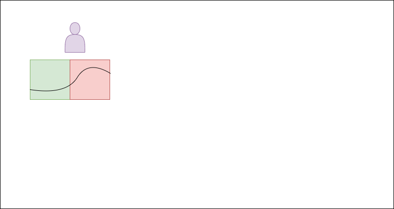
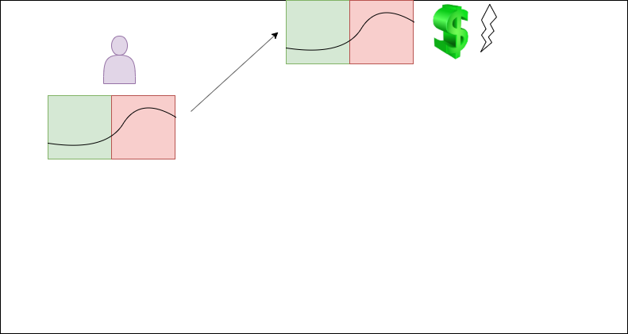
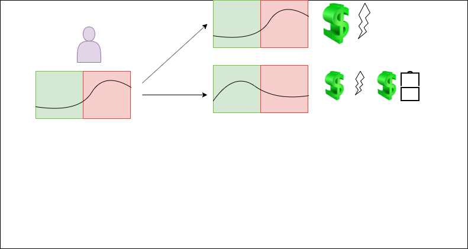
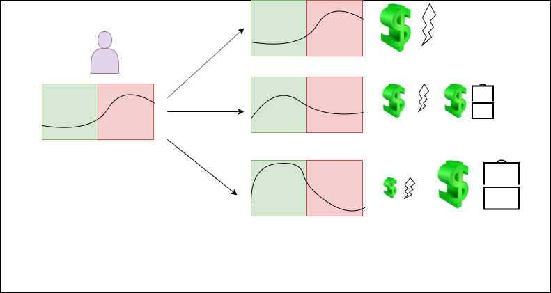
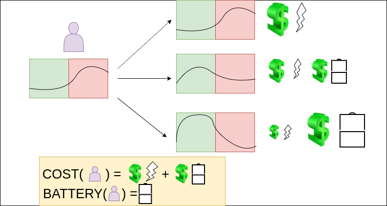
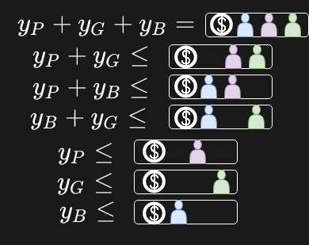
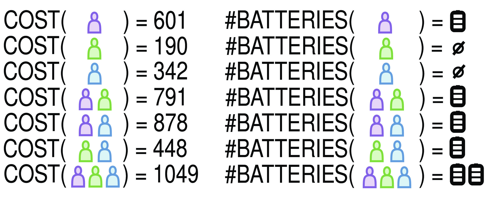
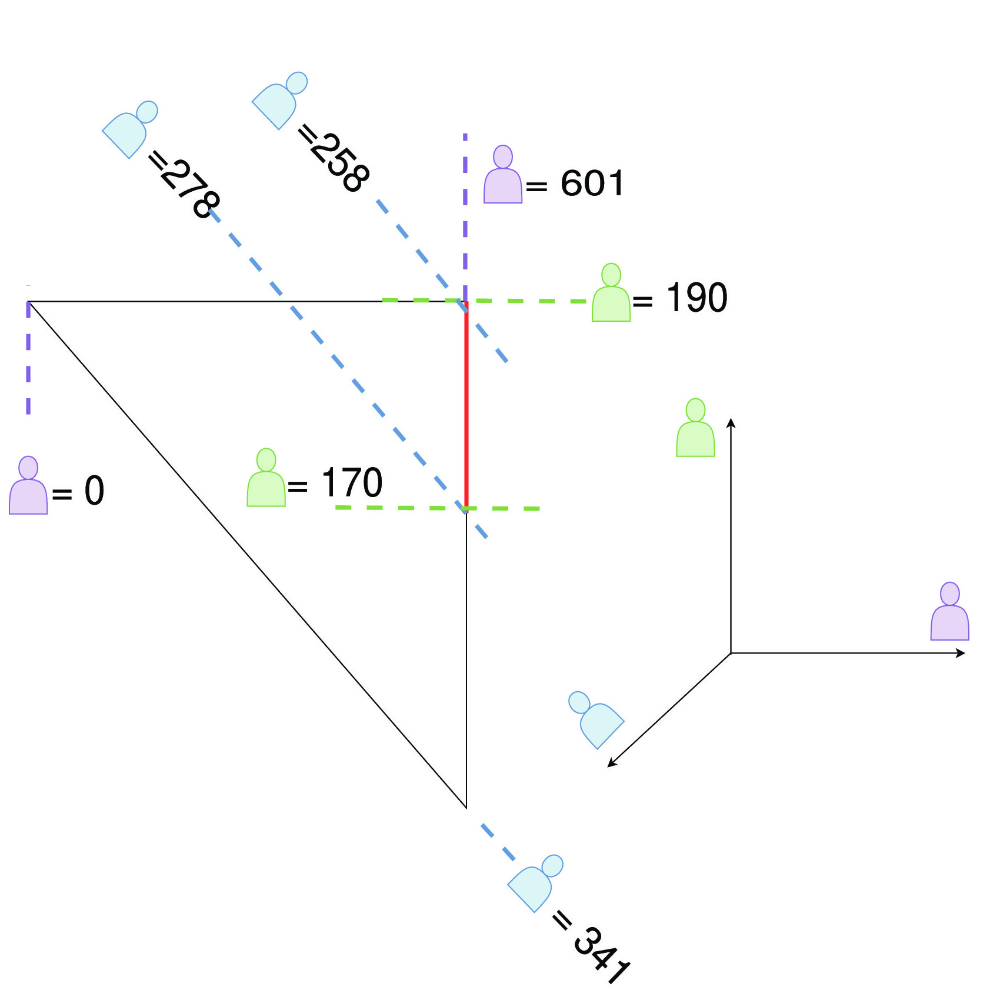
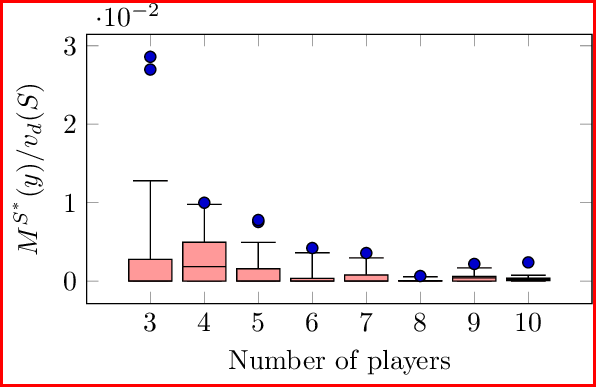
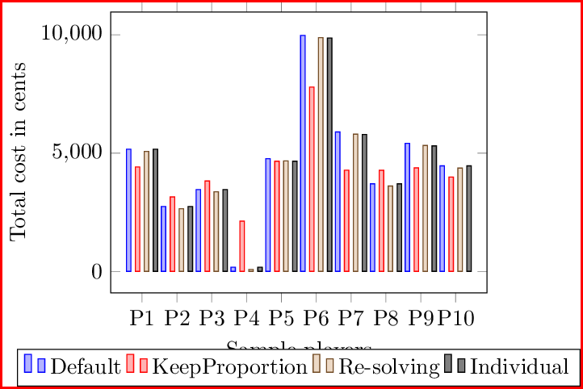

Diego Kiedanski, Ariel Orda, Daniel Kofman
June 22, 2020








[1] P. Chakraborty et al. 2018. Sharing Storage in a Smart Grid: A Coalitional Game Approach.
[2] D. Kiedanski et al. 2019. The Effect of RampConstraints on Coalitional Storage Games.

